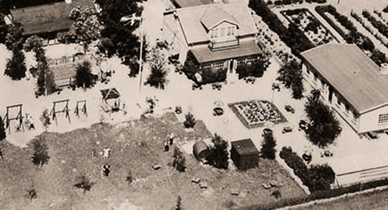

Danmarks bedst beliggende restaurationsbryggeri – sådan kan man uden tvivl betegne Bryggeri Skovlyst. Vi vil gerne skabe et sted hvor man kan trække sig fra hverdagen og finde noget ro. Det er her den dejlige Hareskoven spiller en rolle. Vores omgivelser er unikke og magiske hele året rundt og vi prøver på alle måder at tage den stemning med ind i restauranten og til vores gæster. Vores gæster er det vigtigste for Bryggeri Skovlyst og vi værdsætter vores besøgende hver dag. Filosofien bag øllet på Bryggeri Skovlyst er gode råvarer i fin balance, inspireret af årstiderne. Vores øl er udviklet i tæt samarbejde mellem vores brygger og kok for at opnå den perfekte balance mellem mad og øl.
På den smukkeste skovvej midt i Hareskoven ved Værløse ligger Bryggeri Skovlyst. Her har bryggeriet eksisteret siden 2004, hvor et gammelt traktørsted blev overtaget og omdannet til det stemningsfulde sted, det er i dag. Bryggeri Skovlyst drives i dag af Trine Kure Høpfner, som overtog stedet fra sin far af. Tilbage i 2004 åbnede Jan Olsen, sammen med sin kone Kasia Bryggeri Skovlyst. I dag er Bryggeri Skovlyst et mikrobryggeri med deres egen restaurant, hvor de daglig har mange gæster som tager vejen forbi dem.